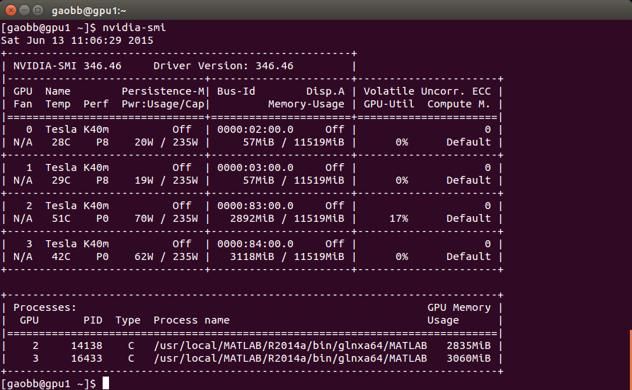
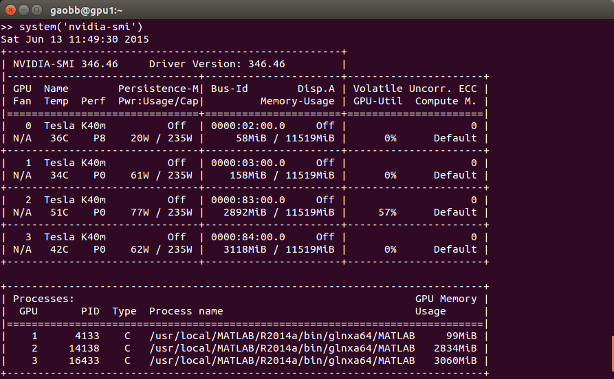
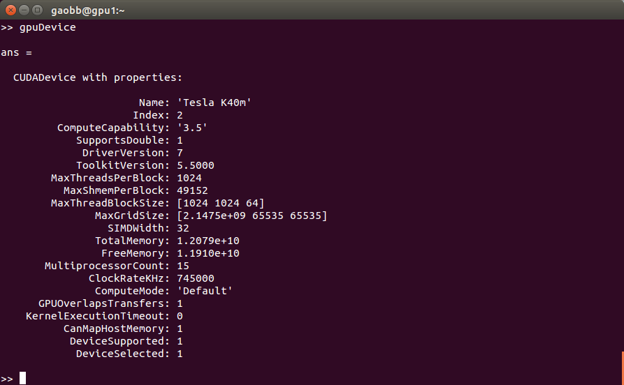

查看服务器GPU计算资源
1 | $ nvidia-smi |

上图可以知道，该台服务器共有4 块GPU（0 1 2 3），其中2和3 被进程PID：14138和16433使用.
如果自己的应用需要很大显存，可以指定GPU，例如这里至少可以使用 0 和 1. 在matlab 环境下，可以使用 gpuDevice 和 reset.1
2matlab %启动matlab
gpuDevice
默认为第0块GPU. 需要指出的是matlab 从1开始计数，而系统则是从0开始计数. 因此在matlab 下4块显卡的编号从（0 1 2 3）变为（1 2 3 4）.
如果我们想用第1块显卡，则对应于matlab下面的第2块.可以使用reset 设定.1
2
3$ g=gpuDevice(2)
$ reset(g)
$ system('nvidia-smi') %调用系统命令查看

可以看到第1块显卡被启动，也可以使用matlab 提供的函数gpuDevice 查看.
1 | gpuDevice |

可以看到当前的GPU的编号为2,对应于系统的1.
GPU 与 CPU 之间的数据交换
gpuArray
MATLAB中的gpuArray表示存储在GPU上的数据。使用gpuArray函数可以将数据从MATLAB工作空间传送到GPU。例如：1
2A = data(10);
G = gpuArray(A);
gather
执行以上语句后，G 就是一个MATLAB GPUArray对象了。
当GPU运行完程序后，可以通过gather函数将数据从GPU取回到MATLAB工作空间。1
D = gather(G);